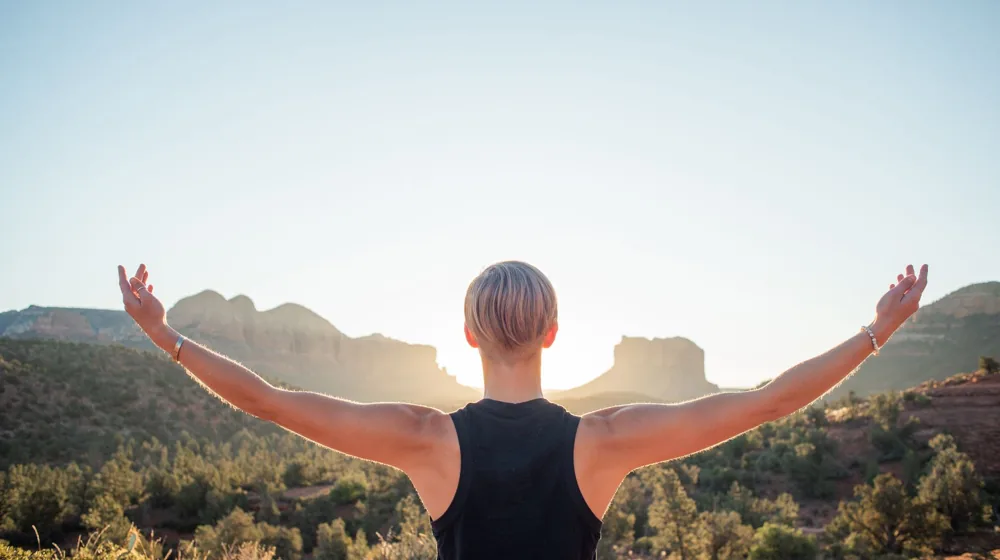

웰니스 여행 성공의 비밀: 후기로 본 필수 준비물과 주의사항
사진: RAY LEI / Pexels (무료 이미지, 출처 표기)
웰니스 여행, 왜 떠날까요?

일상의 반복과 디지털 기기 속에서 지친 현대인들에게 웰니스 여행은 단순한 휴식 이상의 의미를 제공합니다. 몸과 마음의 건강을 회복하고, 내면의 균형을 찾아 삶의 활력을 되찾는 것을 목표로 합니다. 스트레스 해소, 디지털 디톡스, 건강한 습관 형성 등 개개인의 필요에 맞춰 다양한 형태로 떠나고 있습니다.
최근에는 힐링과 명상뿐만 아니라, 자연 속에서 액티브한 활동을 즐기거나 건강한 식단을 체험하는 등 폭넓은 프로그램이 인기를 얻고 있습니다. 바쁜 일상 속에서 잠시 멈춰 서서 자신을 돌아보는 소중한 시간이 될 수 있습니다.
나에게 맞는 웰니스 프로그램 선택 가이드
수많은 웰니스 프로그램 중에서 자신에게 맞는 것을 고르는 것이 중요합니다. 단순히 유행을 따르기보다는, 여행의 목적과 자신의 건강 상태, 선호하는 활동 등을 고려하여 신중하게 선택해야 만족도를 높일 수 있습니다. 아래 표를 통해 주요 프로그램 유형을 확인하고, 자신의 관심사에 맞는 곳을 찾아보세요.
프로그램 선택 시에는 해당 시설의 후기를 꼼꼼히 읽어보고, 제공되는 서비스에 무엇이 포함되어 있는지 미리 확인하는 것이 좋습니다. 2026년 10월 기준으로 가격 변동이 잦으므로, 정확한 금액과 예약 방법은 반드시 공식 웹사이트나 예약 플랫폼에서 다시 확인하셔야 합니다.
성공적인 웰니스 여행을 위한 준비물 체크리스트
웰니스 여행은 일반 여행과 달리 특별한 준비물이 필요할 수 있습니다. 완벽한 휴식과 몰입을 위해 아래 체크리스트를 활용하여 짐을 꾸려보세요.
- 편안한 의류 및 신발: 요가복, 트레이닝복, 걷기 편한 운동화, 숙소 내에서 신을 수 있는 슬리퍼 등.
- 개인 위생용품: 친환경적인 제품, 자외선 차단제, 모기 기피제, 개인 수건 등.
- 활동 관련 용품: 수영복(스파/수영장 이용 시), 개인 요가 매트(선택 사항), 명상용 쿠션, 독서할 책, 일기장 및 필기구.
- 디지털 디톡스 준비물: 휴대폰 사용을 줄이기 위한 아날로그 시계, 카메라(필요 시).
- 상비약: 평소 복용하는 약, 소화제, 밴드, 해열제 등 기본적인 상비약.
특히 디지털 디톡스를 계획하고 있다면, 스마트폰 대신 사용할 카메라나 아날로그 다이어리를 준비하여 온전히 현재에 집중하는 시간을 가질 수 있습니다.
실패하지 않는 웰니스 여행: 후기로 본 주의사항
웰니스 여행은 기대가 큰 만큼, 예상치 못한 부분에서 실망할 수도 있습니다. 다른 여행자들의 후기와 전문가들의 조언을 바탕으로 주의할 점을 미리 확인하여 만족스러운 경험을 만들어보세요.
- 과도한 기대는 금물: 웰니스 여행은 마법처럼 모든 문제를 해결해주지 않습니다. 짧은 기간 안에 극적인 변화를 기대하기보다는, 자신에게 맞는 속도로 천천히 몸과 마음을 돌보는 데 집중하는 것이 중요합니다.
- 프로그램 세부 내용 확인: 식단, 숙소, 액티비티, 전문가 지도 여부 등 프로그램에 포함된 모든 내용을 미리 확인하세요. 추가 요금이나 불필요한 옵션이 있는지 꼼꼼히 살펴봐야 합니다.
- 건강 상태 고려: 특정 식단(디톡스 등)이나 격렬한 활동이 포함된 경우, 자신의 건강 상태를 고려해야 합니다. 필요한 경우 전문가와 상담 후 결정하는 것이 안전합니다.
- 디지털 디톡스 준비: 디지털 기기와 멀어지는 것에 대한 심리적 준비가 필요합니다. 업무나 연락 문제로 스트레스를 받지 않도록 주변에 미리 알리고, 꼭 필요한 연락처만 비상용으로 준비하세요.
- 후기 필터링: 너무 극단적인 후기보다는 다양한 관점의 후기를 참고하고, 궁금한 점은 직접 문의하여 정확한 정보를 얻는 것이 현명합니다.
특히, 전문가가 상주하며 개별 상담을 제공하는지 여부는 프로그램의 질을 가늠하는 중요한 기준이 될 수 있습니다. 신뢰할 수 있는 기관에서 운영하는 프로그램을 선택하는 것을 권장합니다.
여행 후에도 지속되는 웰니스 효과를 위해
웰니스 여행의 진정한 가치는 여행지에서의 경험을 일상으로 가져와 지속하는 데 있습니다. 여행 중 배웠던 명상법, 건강한 식습관, 운동 루틴 등을 일상생활에 조금씩 적용해보세요.
작은 습관의 변화가 모여 장기적인 웰니스 효과를 만들어낼 수 있습니다. 또한, 여행 중 만났던 사람들과의 소중한 인연을 이어가거나, 다음 웰니스 여행을 계획하며 긍정적인 동기 부여를 얻는 것도 좋은 방법입니다. 웰니스 여행이 일회성 경험이 아닌, 건강한 삶으로 나아가는 여정의 시작이 되기를 바랍니다.
🔗 이 글도 함께 보면 좋아요: 태국, 왜 갑자기 검색어 1위일까? 숨겨진 여행 트렌드의 반전
관련 추천 상품
이 포스팅은 쿠팡 파트너스 활동의 일환으로, 이에 따른 일정액의 수수료를 제공받습니다.